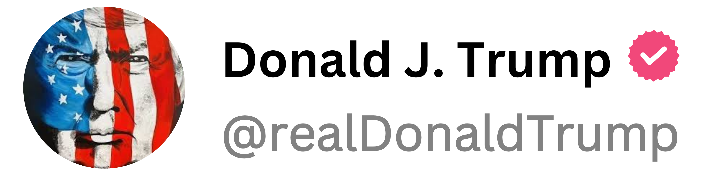

Just got hit with a mic by a very disrespectful reporter—total disgrace! They try to push me around, but I’m always in control. Fake news media is out of control and will NEVER get away with this! #MAGA #FakeNews